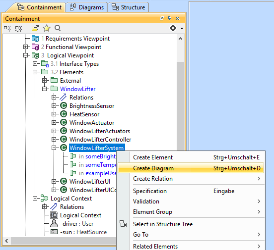
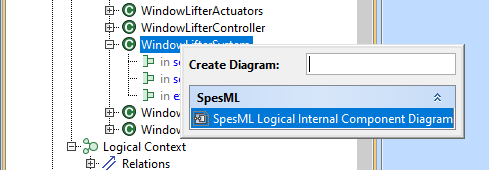
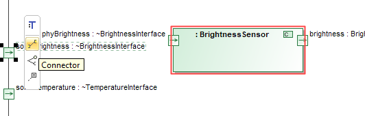
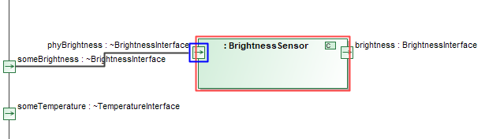

SpesML Plugin - Logical Viewpoint SpesML Plugin - Logical Viewpoint
Overview
In order to realize the desired functionality that is specified in the models of the functional viewpoint, the system under development is decomposed into a network of communicating logical components.
The result is a logical architecture model which is independent on any technological constraints and which can be reused for multiple platforms.
The Logical Components within the Logical Component Architecture provide a syntactic interface and a behavior specified by state automata.
To compose the individual logical components to a logical architecture, the components interfaces are connected via connectors.
Every such connection specifies which output channels will provide values to with input channels.
Method
The elements from the functional architecture are mapped onto the components of the logical architecture.
In general, this mapping is n:m.
We recommend to design the functional white-box models already with the component architecture in mind, to achieve a n:1 mapping of elementary functions onto logical components.
The platform independent logical components of the Logical Component Architecture will be mapped to technical components of the technical architecture in order to come to a platform dependent implementation of the component.
The following figure illustrates these relations:

Structure
The Logical Architecture is modelled in the Logical Viewpoint folder of a SpesML Project.
This diagram can be defined inside any logical (sub-)system (i.e. logical component).
The following figure shows how the logical architecture of an exemplary window lifter system is embedded in the model:

Inside the SpesML Logical Internal Component Diagram the modeler can use all Logical Components to model the actual Logical Component Architecture.
The Logical Interfaces of these components can then be connected via Connectors.
In the following figure you can see how the logical architecture of the window lifter system is modelled:

How to Model
To create the logical architecture of the examplary Window Lifter above, you can start by following these steps:
- Navigate to the component in the containment tree, for which you want to model the logical architecture.
- Perform a right-click on this component and select Create Diagram:

- A dialog will open in which you can select the kind of diagram you want to create. Select SpesML Logical Internal Component Diagram:

- Another dialog will open that lets you choose, which elements of the selected components you immediately want to display in the new diagram. For our components this means that we can select which of the interfaces we want to see represented in the diagram. Keep all of them selected and click OK:

- An editor window with the new diagram will open. It contains only those elements which were already selected in the previous dialog - in our case the three interfaces.
- You can add Parts for the components that you need to model the logical architecture. To do so, drag the components from the containment tree and drop them into the diagram.
- To display the interfaces of the new part, select the part and click on Display all Ports:

- Connections between interfaces are created in a similar way: Select the port of an interface you want to connect and click on Connector in the menu next to the port:

- Your cursor will become the connector tool with which you can easily navigate to the target port for the connection:

- Using these mechanisms, you can create the logical architecture of the Window Lifter System:
Elements
Logical Viewpoint
 Logical Tracing Package Logical Tracing Package
 Logical Interface Types Package Logical Interface Types Package
 Logical Package Logical Package
Logical Context
 Logical Actor Logical Actor
Logical Component
 Logical Component Part Logical Component Part
 Logical Interface Type Logical Interface Type
 Channel Channel
Diagrams
 SpesML Logical Impact Map SpesML Logical Impact Map
SpesML Logical Tracing Map
 SpesML LogicalToFunctional Matrix SpesML LogicalToFunctional Matrix
SpesML LogicalToRequirement Matrix
 SpesML Logical Internal Component Diagram SpesML Logical Internal Component Diagram
|
 Data Types
Data Types Requirements
Requirements Functional Viewpoint
Functional Viewpoint Technical Viewpoint
Technical Viewpoint